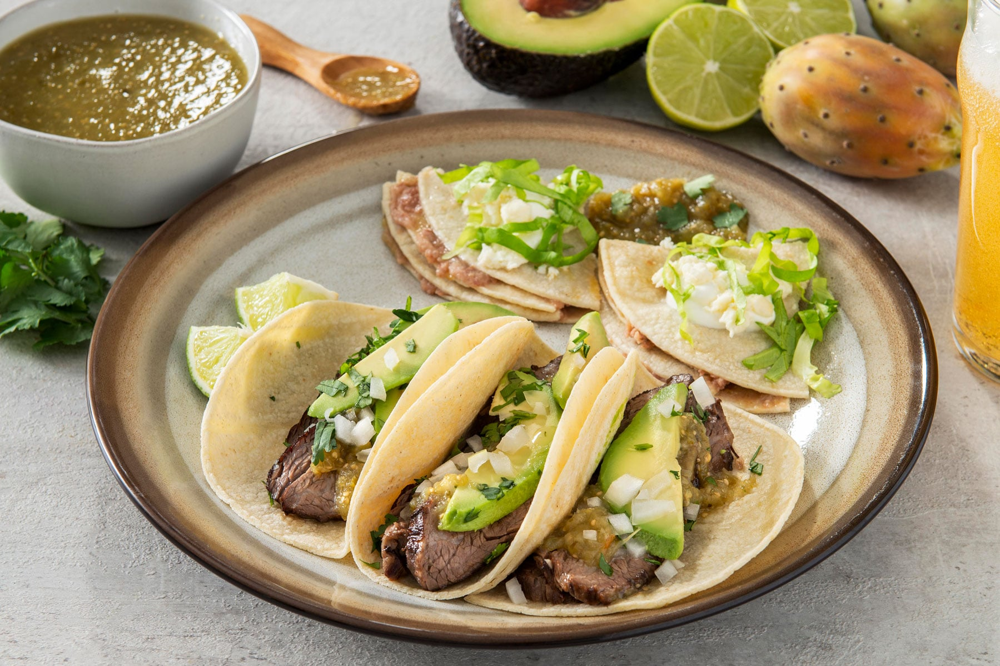

Tacos de Carne Asada
Ingredientes:
- 500g de carne de res (preferiblemente arrachera)
- 1 cebolla morada grande, cortada en julianas
- 2 limones, el jugo
- 1 manojo de cilantro fresco, picado
- 1 paquete de tortillas de maíz
- Sal y pimienta al gusto
- Salsa verde y salsa roja al gusto
Instrucciones:
- Marina la carne con sal, pimienta, jugo de limón y cilantro picado durante al menos 30 minutos.
- Asa la carne a fuego alto hasta que esté dorada por fuera pero jugosa por dentro, aproximadamente 4-5 minutos por lado.
- Deja reposar la carne por unos minutos antes de cortarla en tiras delgadas.
- Calienta las tortillas de maíz en un comal o sartén hasta que estén ligeramente doradas.
- Rellena cada tortilla con tiras de carne asada, cebolla morada y las salsas verde y roja al gusto.
- Sirve los tacos de carne asada calientes, acompañados de limón y cilantro fresco.